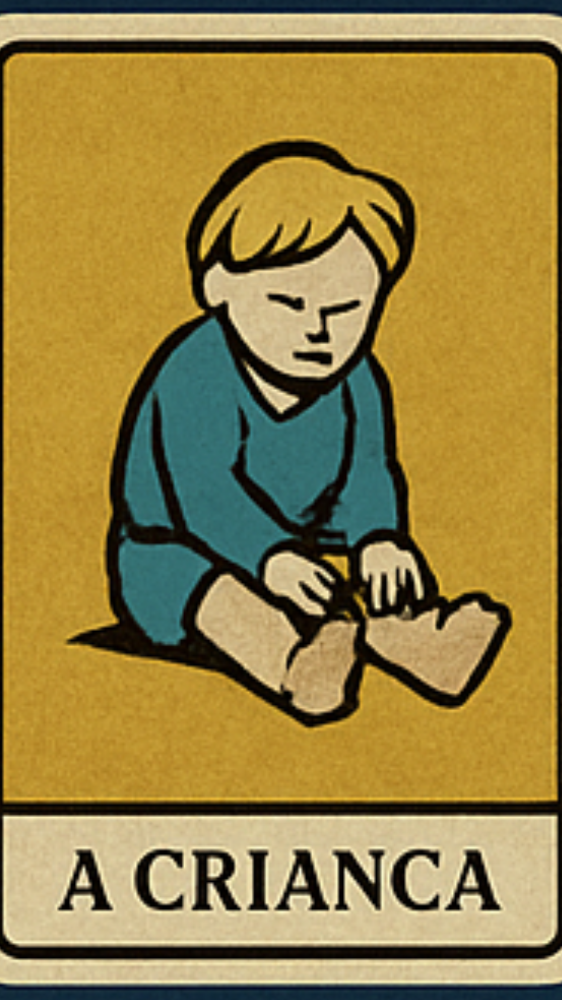
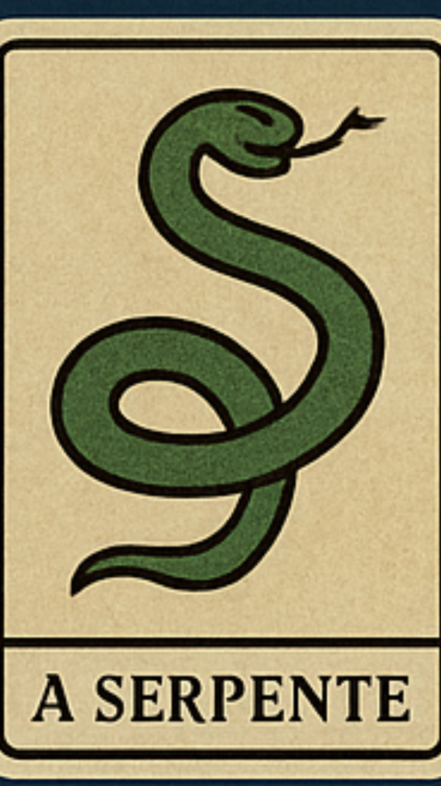
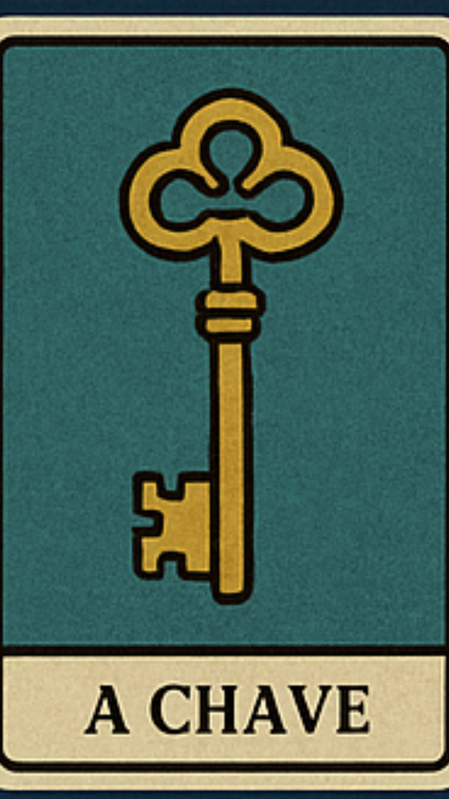

🔮Tiragem intuitiva 🔮
Escolha as cartas na ordem que tocar sua intuição. Cada escolha revela algo sobre sua jornada interior.



Escolha as cartas na ordem que tocar sua intuição. Cada escolha revela algo sobre sua jornada interior.